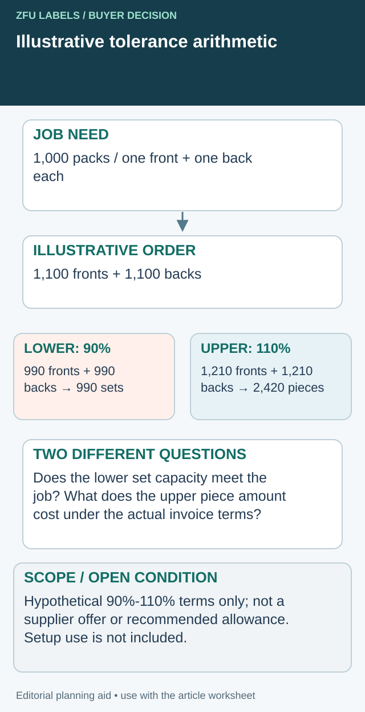

The quote shows a price per thousand labels and a note allowing a quantity variation. The buyer reads the purchase-order quantity as exact. The printer reads it as a target within its stated terms. The disagreement only appears when an invoice or a short packing run exposes the difference.
Agree the delivery quantity boundary before production: what may be supplied, what will be invoiced and what happens if the usable quantity is below the requirement. Keep this separate from print-quality tolerances. An acceptable color or cut does not settle whether the commercial quantity is acceptable.

Put the lower and upper boundaries into separate calculations
Use two calculations when comparing a quantity-tolerance offer. The first asks how many complete packs the lower component quantities can support. The second asks what the upper quantities could require the business to receive and pay for. A single average percentage answers neither question reliably.


Here is a deliberately hypothetical arithmetic example. It is not this site's quotation, a recommended tolerance, a measured production outcome or an industry rule. A job needs 1,000 packs, each with one front and one back label. The proposed order is 1,100 fronts and 1,100 backs. Suppose the offer explicitly permits each component to be delivered at 90%–110% of its ordered quantity, bills actual delivered pieces and has no other charges in this simplified calculation.
| Component | Ordered pieces | Hypothetical lower boundary | Hypothetical upper boundary |
|---|---|---|---|
| Front | 1,100 | 990 | 1,210 |
| Back | 1,100 | 990 | 1,210 |
| Complete sets / piece commitment | Two different units | 990 sets before any setup consumption | 2,420 billable pieces at the assumed upper bounds |
The lower case already misses the 1,000-pack need before setup, inspection or rejects. An actual delivery with 990 fronts and 1,210 backs still supports only 990 complete sets. A combined count above the nominal order total cannot fill the missing fronts.
For components used at different ratios, calculate available complete sets as the minimum of each eligible component quantity divided by its required pieces per pack, rounded down. Deduct separately established non-packing use before that calculation. Use agreed counting and rounding rules; do not silently assume every nominal piece is usable.
Price the upper case on the actual offer
In this simplified example, if both components have the same quoted piece price p, the upper variable printing amount is 2,420 × p. Real offers can have different component prices, setup, freight, tax and invoicing terms, so calculate their lines separately. This bound is a scenario, not the expected invoice or proof that the extremes will occur together.
Ask for a guaranteed-minimum or exact-count alternative if the permitted lower case fails the job. Compare its actual price and delivery arrangement with a larger nominal order under the original terms. If the supplier instead offers a later balance, test whether the first release supports the scheduled complete packs; an eventual order total does not fill today's component shortage.
Begin with the quantity the operation actually needs
Distinguish the planned number of finished packs from the number of label pieces required. Include each component and the agreed setup or inspection uses. Do not use a supplier's minimum order as the packing requirement or treat a generic waste percentage as measured line consumption.
The small-trial allocation guide shows why trial, photography and destructive checks consume stock. The quantity tolerance discussion begins after those needs have been identified, because a permitted shortfall can otherwise remove labels the operation already depends on.
State whether the requirement is a minimum usable quantity, a maximum budget commitment or an exact quantity for a controlled event. Those priorities can lead to different offers. A launch that cannot tolerate a shortage has a different concern from a short seasonal campaign that cannot use surplus labels later.
Ask what the quoted tolerance means
Read the actual supplier wording and ask for clarification where needed. Does the permitted variation apply to the whole order, each artwork or each label component? Is the invoice based on ordered quantity or delivered quantity? Are identified rejected pieces excluded? Is a partial delivery assessed separately from the completed order?
There is no universal percentage that every label buyer should accept. Production process, order size and supplier terms vary. Do not copy an allowance from an unrelated quote and present it as a mandatory industry standard.
Ask whether an exact-count or guaranteed-minimum alternative is available and how it changes price or timing. The printer may need a different production or counting arrangement. That option should be compared as an actual proposal rather than assumed to be either free or impossible.
Write a quantity agreement alongside the specification
| Commercial field | Decision to confirm |
|---|---|
| Unit | Individual labels, complete sets or another explicitly defined unit |
| Allocation | Quantity by SKU, artwork revision and component |
| Lower boundary | Minimum acceptable usable delivery under the agreement |
| Upper boundary | Maximum accepted supply and associated payment obligation |
| Invoice basis | Ordered quantity, actual quantity or another stated basis |
| Counting basis | What is included and excluded from reported quantity |
| Split shipments | How each release and final balance are evaluated |
| Exceptions | Notification, approval and remedy process |
| Evidence | Roll/carton counts and delivery reconciliation |
This worksheet is a negotiation aid, not legal wording. Have the responsible commercial parties confirm the terms they actually accept, and retain the original quotation and order confirmation with it.
Test the agreement with a simple scenario
Imagine a buyer needs ten thousand complete packs, each using one front and one back label. A hypothetical offer allows a shortfall on each component. If the fronts arrive below the needed quantity, extra back labels cannot restore complete sets. An acceptable total across both components can still leave the packing job short.
Use the actual offered limits to calculate the lowest complete-pack quantity and the highest possible invoice. These are scenario calculations, not predictions of what the printer will deliver. They help the buyer see whether the proposal fits the operational requirement and budget.
Run the same exercise for a multi-flavor order. A total surplus does not compensate for a shortage of the fastest-selling SKU. The SKU reconciliation guide helps keep that allocation visible.
Compare surplus cost with shortage cost carefully
More labels can be useful for a stable repeat product, but surplus may become obsolete when copy, packaging or branding changes. A lower unit price is not automatically a lower total commitment. Compare the confirmed purchase amount and the stock the business expects to use.
On the other side, a shortage can affect setup, production slots or delivery commitments. Quantify those consequences only from actual records or clearly labeled assumptions. Do not invent a universal cost of downtime to justify a preferred supplier or an arbitrary overrun allowance.
The quotation baseline guide helps compare offers with the same scope. Keep the quantity boundary in that baseline, otherwise an apparently cheaper quote may simply permit a different deliverable.
Require notice before a meaningful deviation
Agree who should be contacted when the likely output falls outside the accepted range or when a particular SKU is at risk. A useful notice identifies the affected artwork, expected quantity, proposed action and timing. It gives the buyer a decision before the stock is packed and dispatched.
Possible responses include accepting the deviation, adjusting a release, arranging a supplement or changing the production plan. Availability and cost must be confirmed for the actual job. A generic statement that the balance will follow is insufficient if the missing component determines whether the next packing run can start.
Check the invoice and delivery against the same agreement
At receipt, reconcile roll-level and carton-level quantities with the agreed boundaries. Keep physical shortages, quality holds and application losses separate. If a supplier remedy is agreed, link it to the original line and record whether it changes the invoice or creates a replacement delivery.
Do not close the discrepancy merely because the purchase-order total has been reached on paper. The record should identify the quantity accepted for use and any remaining commercial issue.
Resolve the specific label handoff
Include required complete packs, pieces per component and the actual lower/upper and invoice terms.
Prepare the label specification inquiry. The form opens an email draft for your review; attachments go through the listed email or WhatsApp route. Actual supply scope, pricing, samples and timing need project confirmation.
Related decisions: Label Roll Counts: Reconcile Delivered Labels with Usable Quantity; Spice Label Orders: Reconcile Quantities Before the Packing Run; Obsolete Label Stock: Plan the Cutoff Before Ordering More